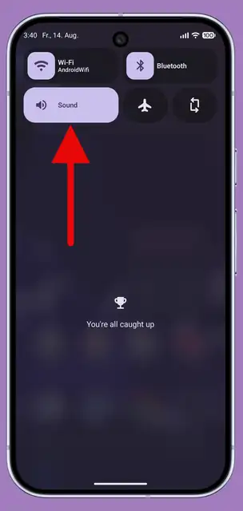
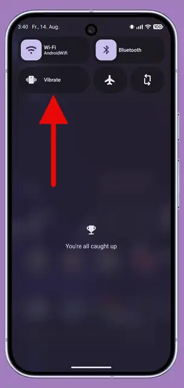

Quick Settings Sound Profile
أدوات النظام
Easily switch your sound profile directly from your smartphone's Quick Settings. This app allows you to toggle your sound mode with a single tap. Additionally, it offers granular settings to customize how each mode behaves upon activation (requires Android 15 or higher). Once you've added the Quick
✓ ترخيص مفتوح (GPL-3.0-only) · آخر تحديث: 2026-11-23
2.1.0الإصدار
1.3 MBالحجم
GPL-3.0-onlyالرخصة
Open in Kanzتحميل APK (1.3 MB)
Download APK
SHA-256: 66da8907f0aaf387c53146fc30c87ce6d1810ce4f3c83999fc1b0334e080b8e0


امسح الكود لفتح صفحة التطبيق
Scan to open this app page
لو كنز مش متثبت عندك: نزّل متجر كنز.
Not installed? Get the Kanz store.